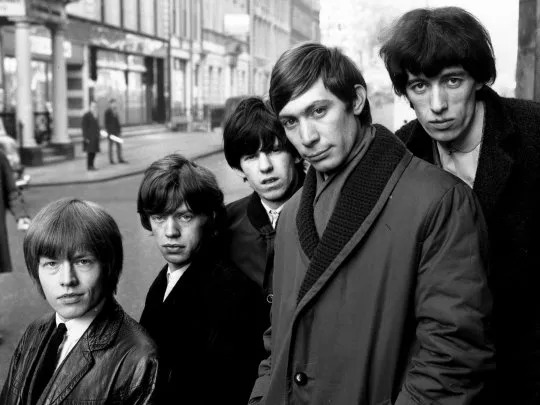
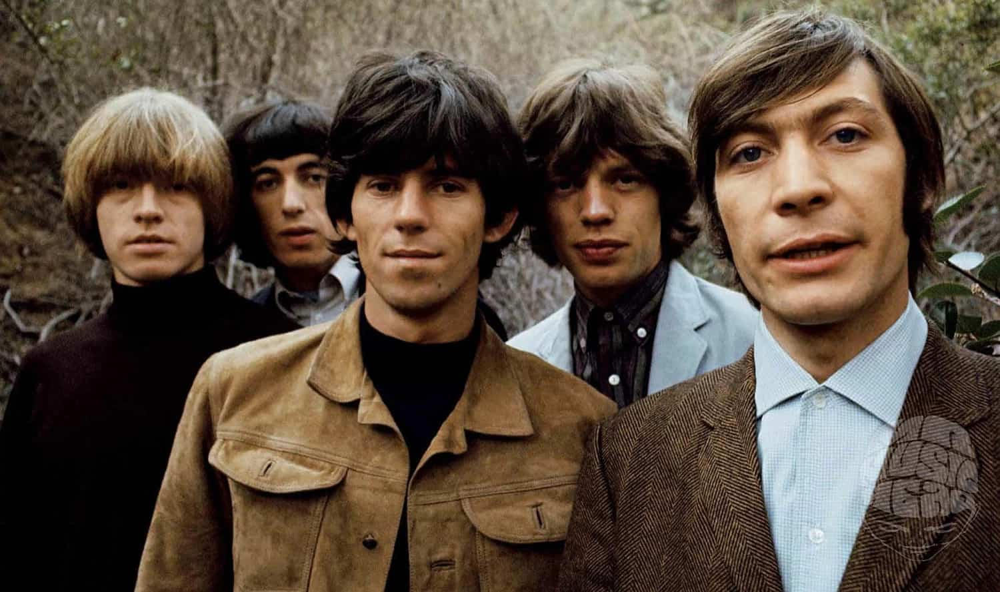
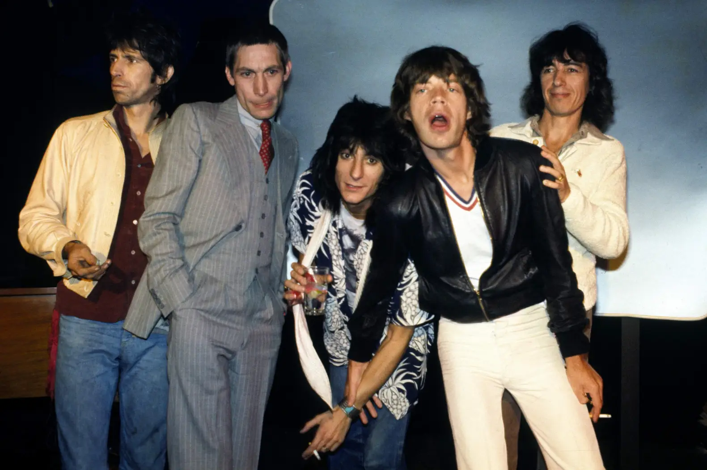
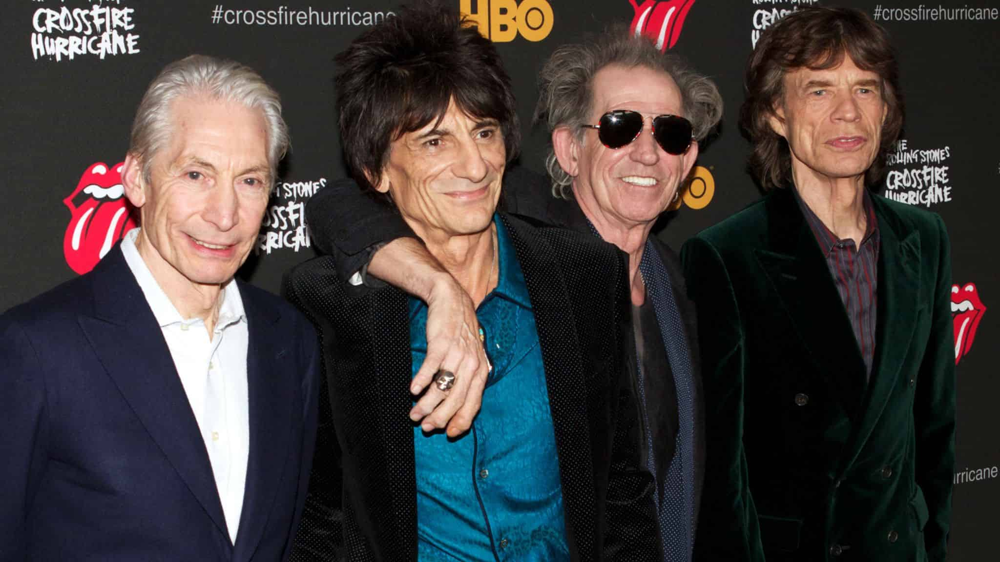
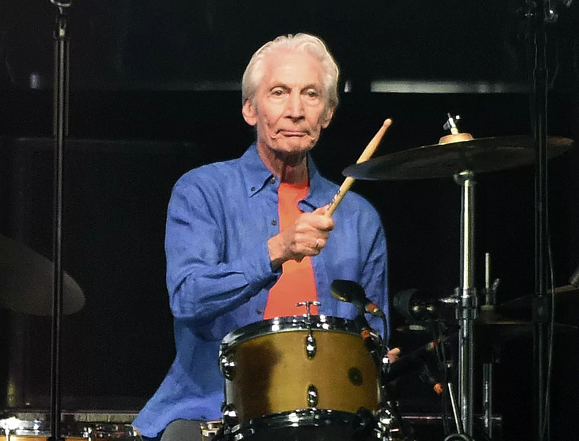

1962 - FUNDACIÓN

Keith Richards y Mick Jagger eran compañeros de clase en la escuela primaria Wentworth, Dartford; no
obstante, tras mudarse la familia de Richards, perdieron contacto. Finalmente, se reencontraron en
la estación de tren Dartford en 1961. Por entonces Richards asistía al Sidcup Art College, mientras
Jagger estaba matriculado en la London School of Economics. En sus ratos libres Jagger cantaba con
Little Boy Blue and the Blue Boys, un grupo aficionado al que pertenecía el bajista Dick Taylor,
también amigo de Richards y estudiante de la Sidcup Art College. Al poco tiempo Richards se integró
al conjunto.
A principios de 1961 llegó a la capital inglesa Brian Jones, exintegrante de The Ramrods, banda de
su nativa Cheltenham. Jones quería formar una banda de R&B y puso un anuncio en el semanario Jazz
News.
Una noche a inicios de 1962, Brian Jones, y su grupo se presentaron en el Ealing Jazz Club. El espectáculo le causó una grata impresión a Keith Richards.
Pocas semanas después, Brian Jones bautizó a la agrupación como "The Rolling Stones" después de
escuchar la canción «Rollin' Stone» del músico estadounidense de blues Muddy Waters.
Ver Más
1965 - ÉXITO MUNDIAL

Su segunda producción discográfica, The Rolling Stones No.2, salió a la venta el 15 de enero de 1965
en Gran Bretaña, apoderándose rápidamente de la cima de las carteleras británicas por 13
semanas.Repitiendo la fórmula de su anterior trabajo, Oldham conjuntó un álbum de versiones,
exceptuando las inéditas «Off the Hook», «What a Shame» y «Grown Up Wrong». En Rolling Stones No.2
se observa una evolución de la banda hacia el terreno R&B y blues, integrado por temas más lentos
que su predecesor y que tienen como base rítmica la batería; además se aprecian la inclusión más
constante de la slide guitar y de la armónica. La publicación en los Estados Unidos se realizó al
siguiente mes y al igual que en su anterior LP, sería editado bajo otra denominación, The Rolling
Stones, Now!. Al contrario que su versión británica, este disco fue acompañado del éxito de «Heart
of Stone», canción que sustituyó a «Grown Up Wrong» en el álbum estadounidense, siendo el primer
sencillo de la banda en el que figuraban como compositores.
Ver Más
1978 - SEGUNDO AIRE

Hacia finales de la década de los 70 comenzaron a recibir críticas por la calidad de sus trabajos
debido a que no alcanzaron la aceptación que tuvieron sus producciones de principios de la década.
Estaban considerados como una banda «obsoleta» en pleno auge de la música punk. En medio de las
críticas pusieron en circulación su siguiente lp, Some Girls, el 9 de junio de 1978, trepando
directamente hasta la cima de las carteleras mundiales y se convirtió hasta la fecha en su álbum más
vendido en Estados Unidos y el resto del mundo al rebasar los 10 millones de unidades. Inspirado en
la música punk y disco, esta grabación contenía canciones rápidas con letras cínicas y fuerte
crítica social, aunque también se apreciaban una dosis de misoginia y racismo. Registrado entre
octubre de 1977 y marzo de 1978 en los estudios Pathé Marconi de París, del álbum se extrajeron los
sencillos «Miss You», «Beast of Burden», «Respectable» (en Reino Unido) y «Shattered» (en Estados
Unidos), que figuraron entre las 40 principales de las radios británicas y estadounidenses.
Ver Más
2001 - NUEVO MILENIO

Con su presentación el 3 de septiembre de 2002 en el FleetCenter de Boston iniciaron su gira de
aniversario denominada Licks Tour. Posteriormente la Virgin Records, en asociación con ABKCO y
Rolling Stones Records, publicó el compilatorio Forty Licks el 30 de septiembre, para conmemorar el
40.ª aniversario de la fundación de The Rolling Stones. Este disco doble contaba con cuarenta
pistas, treinta y seis de los temas más conocidos de la banda y cuatro nuevas composiciones grabadas
en París a mediados de año. El mismo día sale «Don't Stop» para promocionarlo, con un éxito discreto
en las listas de todo el mundo, aunque se colocó dentro del top 10 de los listados de Japón, Taiwán
y Argentina.Forty Licks se convirtió en un éxito inmediato, vendiendo en su primera semana 310 000
unidades y al final del año se situó entre los discos más vendidos del año, acreditándose triple
disco de platino en Estados Unidos y superando la barrera de los seis millones de unidades alrededor
del mundo. Después de más de treinta presentaciones concluyeron el año con un espectáculo en el MGM
Grand Garden Arena de Las Vegas el 30 de noviembre
Ver Más
5 DÉCADAS TOCANDO JUNTOS

La gira No Filter Tour comenzó el 9 de septiembre de 2017 en Hamburgo y cerró su primera etapa dos
años después en Miami, el 30 de agosto de 2019. Estaba programada para concluir en 2020, pero tuvo
que ser pospuesta debido a la pandemia de Covid-19. Se anunció que la gira se reanudaría en
septiembre de 2021. No obstante, a principios de agosto se anunció que, debido a problemas médicos,
Charlie Watts sería sustituido por Steve Jordan, músico colaborador de Keith Richards.
Sin embargo, el 24 de agosto de 2021, la oficina de los Stones anunció el fallecimiento de Watts a
los 80 años.
El 20 de septiembre de 2021, como antesala al reinicio de la gira, el grupo dio un concierto privado
en el Gillette Stadium de Foxborough, Massachusetts, siendo la primera vez desde enero de 1963 que
Charlie Watts no estaba con ellos en el escenario. Mick Jagger, acompañado por Keith Richards y
Ronnie Wood al frente del escenario, pronunció un emotivo discurso como homenaje a su compañero
recién fallecido
Ver Más